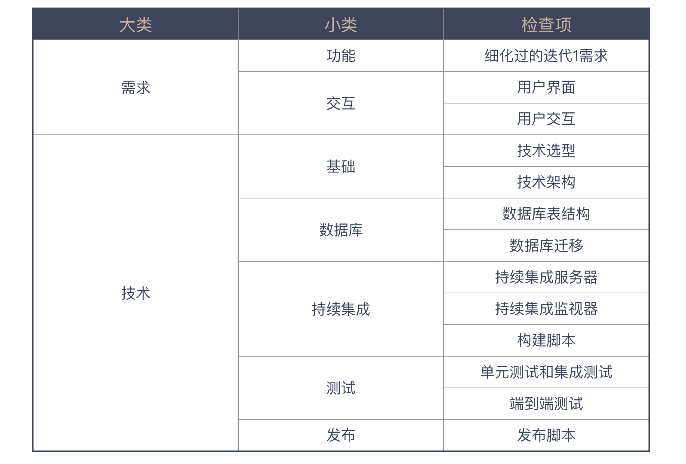
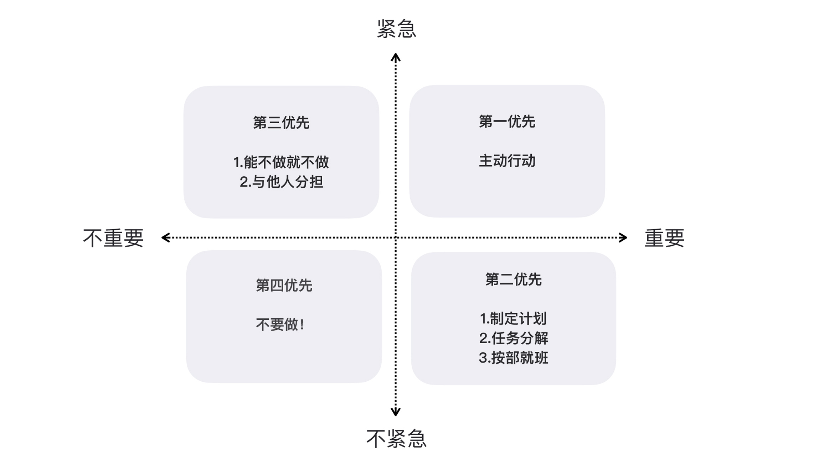
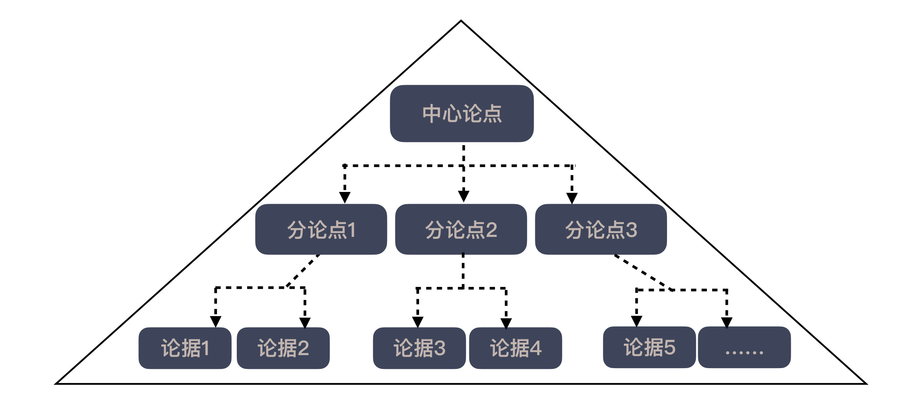
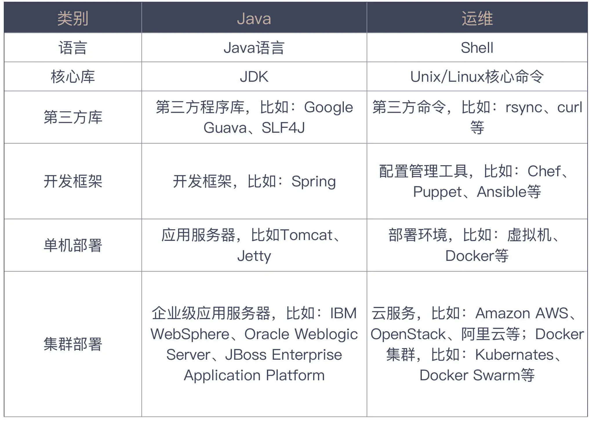
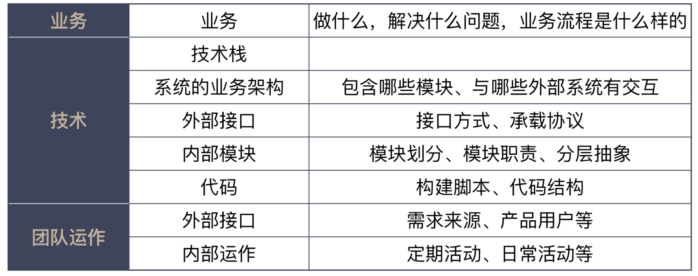

10x程序员工作法笔记
目录
- 以终为始
- 任务分解
- 沟通反馈
- 自动化
- 综合应用
- 结束讲
以终为始
01 | 10x 程序员是如何思考的
大多数人工作低效是由于工作中偶然复杂度太多造成的，只要能更多地将注意力放到本质复杂度上，减少偶然复杂度造成的消耗，我们“真实”的工作效率自然会得到大幅度提升。
而想要减少偶然复杂度的消耗，就要了解一些高效的工作方式和行业的最佳实践，而这一切是可以用统一的框架进行思考的。
运用这个思考框架，我们需要问自己一些问题：
- Where are we?（我们现在在哪？）
- Where are we going?（我们要到哪儿去？）
- How can we get there?（我们如何到达那里？）
为了把这个框架应用在我们程序员的工作中，我给了你四个思考原则：
- 以终为始，确定好真实目标；
- 任务分解，找到实施路径；
- 沟通反馈，解决与人打交道出现的问题；
- 自动化，解决与机器打交道出现的问题。
解释一下， 以终为始 就是在工作的一开始就要确定好自己的目标。我们需要看到的是真正的目标，而不是把别人交代给我们的工作当作目标。你可以看出这个原则是在帮助我们回答思考框架中，Where are we going?（我们要到哪儿去？）这个问题。
任务分解 是将大目标拆分成一个一个可执行的任务，工作分解得越细致，我们便能更好地掌握工作，它是帮助我们回答思维框架中，How can we get there?（我们如何到达那里？）的问题。
如何说前两个原则是要在动手之前做的分析，那后面两个原则就是在通往目标的道路上，为我们保驾护航，因为在实际工作中，我们少不了与人和机器打交道。
沟通反馈 是为了疏通与其他人交互的渠道。一方面，我们保证信息能够传达除去，减少因为理解偏差造成的工作疏漏；另一方面，也要保证我们能够准确接收外部信息，以免因为自我感觉良好，阻碍了进步。
自动化 就是将繁琐的工作通过自动化的方式交给机器执行，这是我们程序员本职工作的一部分，我们擅长的是为其他人打造自动化的服务，但自己的工作却应用得不够，这也是我们工作中最值得优化的部分。
如果今天的内容你只能记住一件事，那请记住： 面对问题时，用思考框架问问自己，现状、目标和路径。
最后，我想请你思考一下，如果把这个思考框架运用在你的职业发展规划上，你会如何回答这三个问题呢？
02 | 以终为始：如何让你的努力不白费？
人们习惯采用顺序思考的思维方式，几十万年的进化将这种思考模式刻在了我们的基因里。要成为更好的自己，我们要克服自身的不足，而这个做法很简单，那就是“以终为始”，做是倒着想，先考虑结果。
人类是一个想象的共同体，做软件的团队更是如此，而我们写出来的软件是我们将“集体想象”落地的载体。
任何事物都要经过两次创造：一次是在头脑中的创造，也就是智力上的或者第一次创造（Mental/First Creation），然后才是付诸实践，也就是实际的构建或第二次创建（Physical/Second Creation）。我们应该在第一次创造上多下功夫，统一集体想象，让目标更加明确。
“以终为始”的思维可以帮助我们更好地规划我们手头任务，也可以帮助我们发现过程中的问题。
如果今天的内容你只能记住一件事，那请记住： 遇到事情，倒着想。
最后，我想请你思考一下，在实际的工作或生活中，你有运用”以终为始“的思维方式吗？帮助你解决过哪些问题？
03 | DoD 的价值：你完成了工作，为什么他们还不满意？
首先，你应该知道，人与人协作，总会有这样或那样的理解差异。开始协作之前，我们最好先同步一下彼此的理解，确保之后不会因为理解不一致，而让协作方措手不及。
怎样解决大家的理解偏差呢，我介绍了 DoD（完成的定义），它是行业中的一种最佳实践，能够在团队内部很好地同步大家对”完成“的理解。好的 DoD 是一个可以检查的清单，可以确保你不遗漏任何事情。
DoD 是一个思维模式，是一种尽可能消除不确定性，达成共识的方式。我们本着”以终为始“的方式做事情，DoD 让我们能够在一开始就把”终“清晰地定义出来。
如果深入领会 DoD，你会发现 DoD 可以灵活应用在不同的协作场景中。比如应用于个人工作、团队工作，甚至跨团队工作。当然，你也可以将它灵活地运用于各种生活场景，弥合人与人之间的差异，更好地协作与沟通。
如果今天的内容你只能记住一件事，那请记住： 在做任何事之前，先定义完成的标准。
最后，我想请你回想一下，你在工作或生活中，是否发生过因为双方理解差异导致的问题或不快呢？有了 DoD 的概念以后，你是不是有了一些新的想法呢？
04 | 接到需求任务，你要先做哪件事？
需求，是软件开发中的一个关键环节，一旦需求理解出问题，势必会造成大量的浪费。传统的功能列表只是简单罗列了要实现的功能，丢失了大量的上下文，会导致团队成员对于需求”只见树木不见森林“。
而在比较大的团队中，更是会将一个功能拆分到多个小团队中，每个人看到的只是功能碎片。于是，后来产生了其他的需求描述方式，比如用例和用户故事。
在实际的开发过程中，大量的分歧来自于对”需求完成“的定义。当我们把”以终为始“的原则应用在需求领域中，就会注意到，用户故事有一个非常重要的组成部分是验收标准。
验收标准不仅仅描述了正常流程，也会关注到异常流程的处理，它也是我们验收测试用例的起点。一旦事先定义好验收标准，大量的扯皮功能就随之烟消云散了。
理解了验收标准的作用，即便我们不使用用户故事来定义需求，依然可以把用户故事中的关键点应用到自己的实践中，在功能列表的每个功能定义中，增加验收标准。
如果今天的内容你只能记住一件事，那请记住： 在做任何需求或任务之前，先定好验收标准。
最后，我想请你回想一下， 在实际工作中，你是如何澄清你的需求，或者因为需求不清晰给你造成了哪些困扰？
05 | 持续集成：集成本身就是写代码的一个环节
在软件开发中，编写代码是很重要的一环，但程序员的交付物并不应该是代码，而是一个可工作的软件。当我们在一个团队中工作的时候，把不同人的代码放在一起，使之成为一个可工作软件的过程就是集成。
在很长一段时间内，集成都是软件行业的难题，改动量和集成时间互相影响。幸运的是，不同的人在不同的方向尝试着改变，结果，同时加大改动量和集成时间的人陷入了泥潭，而调小这两个参数的人看到了曙光。
每日构建作为早期的一种“最佳实践”被提了出来，但因为它基本上都是原则，没有得到广泛的应用。当人们进一步“调小”参数后，诞生了一个更极致的实践：持续集成，也就是每次提交代码都进行集成。真正让持续集成成为行业最佳实践的是，Martin Fowler 的文章以及持续集成服务器。持续集成的思维让我们认识到，开发和集成可以合二为一。我们应该把开发的完成定义为代码已经集成起来，而站在个体的角度，我们应该尽早提交自己的代码，早点开始集成。
如果今天的内容你只能记住一件事，那请记住： 尽早提交代码去集成。
06 | 精益创业：产品经理不靠谱，你该怎么办？
我们必须要有自己的独立思考，多问几个为什么，尽可能减少掉到“坑”里之后再求救的次数。
随着互联网深入人心，软件开始向各个领域蔓延。越来越多的人进入到 IT 行业，不同的人开始在各个方向上进行尝试。这时候，软件开发的主流由面向确定性问题，逐渐变成了面向不确定性问题。
那精益创业到底说的是什么呢？其实很简单。我们不是要面向不确定性创造新事物吗？ 既然是不确定的，那你唯一能做的事情就是“试” 。
怎么试呢？试就要有试的方法。精益创业的方法论里，提出“开发（build）- 测量（measure）- 认知（learn）”这样一个反馈循环。就是说，当你有了一个新的想法（idea）时，就把想法开发成产品（code）投入市场，然后，收集数据（data）获取反馈，看看前面的想法是不是靠谱。
得到的结果无非是两种：好想法继续加强，不靠谱的想法丢掉算了。不管是哪种结果，你都会产生新的想法，再进入到下一个循环里。在这个反馈循环中，你所获得的认知是最重要的，因为它是经过验证的。在精益创业中，这也是一个很重要的概念：经过验证的认知（Validated Learning）。
精益创业提供给我们的是一个做产品的思考框架，我们能够接触到的大多数产品都可以放在这个框架内思考。
有了框架结构，我们的生活就简单了，当产品经理要做一个新产品或是产品的一个新特性，我们就可以用精益创业的这几个概念来检验一下产品经理是否想清楚了。
比如，你要做这个产品特性，你要验证的东西是什么呢？他要验证的目标是否有数据可以度量呢？要解决的这个问题是不是当前最重要的事情，是否还有其他更重要的问题呢？
如果上面的问题都得到肯定的答复，那么验证这个目标是否有更简单的解决方案，是不是一定要通过开发一个产品特性来实现呢？
总结
程序员与产品经理的关系是 IT 行业一个经典的话题。许多程序员都会倾向于不问为什么就接受来自产品经理的需求，然后暗自憋气。
比较早成型的面向不确定创造新事物的方法论是精益创业，它提出了“开发（build）- 测量（measure）- 认知（learn）”这样一个反馈循环和最小可行产品的概念。
当产品经理让我们做一个新的产品特性时，我们可以从精益创业这个实践上得到启发，向产品经理们问一些问题，帮助我们确定产品经理提出的需求确实是经过严格思考的。
如果今天的内容你只记住一件事，那请记住： 默认所有需求都不做，直到弄清楚为什么要做这件事 。
07 | 解决了很多技术问题，为什么你依然在“坑”里？
不同角色工作上真正的差异是上下文的不同。
这是什么意思呢？以前面的问题为例，你在项目里打杂，你只能关注到一个具体的任务，而项目主力心目中是整个系统。 虽然写的代码都一样，但你看到的是树木，人家看到的是森林，他更能从全局思考。
多问几个为什么，交流一下是不是可以换个做法，许多困惑可能就烟消云散了。 而能想到问这样的问题，前提就是要跳出程序员角色思维，扩大自己工作的上下文。
虽然我不是项目主力，但不妨碍我去更深入地了解系统全貌；虽然我不是项目负责人，但不妨碍我去了解系统与其他组的接口；同样，虽然我不是项目经理，但我可以去了解一下项目经理是怎样管理项目的；虽然我不是产品经理，但了解一个产品的设计方法对我来说也是有帮助的。
当你对软件开发的全生命周期都有了认识之后，你看到的就不再是一个点了，而是一条线。 与别人讨论问题的时候，你就会有更多的底气，与那些只在一个点上思考的人相比，你就拥有了降维攻击的能力。
现在你知道为什么你的工作总能让老板挑出毛病了吧！没错，工作的上下文不同，看到的维度差异很大。单一维度的思考，在多维度思考者的眼里几乎就是漏洞百出的。
总结
程序员总喜欢用技术去解决一切问题，但很多令人寝食难安的问题其实根本不是问题。之所以找不出更简单的解决方案，很多时候原因在于程序员被自己的思考局限住了。
不同角色工作真正的差异在于上下文的差异。在一个局部上下文难以解决的问题，换到另外一个上下文甚至是可以不解决的。所以说无论单点有多努力也只是局部优化，很难达到最优的效果。
想把工作做好，就需要不断扩大自己工作的上下文，多了解一下别人的工作逻辑是什么样的，认识软件开发的全生命周期。
扩大自己的上下文，除了能对自己当前的工作效率提高有帮助，对自己的职业生涯也是有好处的。随着你看到的世界越来越宽广，得到的机会也就越来越多。
如果今天的内容你只记住一件事，那请记住： 扩大自己工作的上下文，别把自己局限在一个“程序员”的角色上。
08 | 为什么说做事之前要先进行推演？
你学会了一招，以后你也可以站在“最后一公里”去发现问题了，加上你已经具备的推演能力，给出一个更令人满意的任务列表似乎更容易一些。
把这个问题想清楚了，你重新整理了自己的思路，列出了一个自己的问题解决计划。
- 先从结果的角度入手，看看最终上线要考虑哪些因素。
- 推演出一个可以一步一步执行的上线方案，用前面考虑到的因素作为衡量指标。
- 根据推演出来的上线方案，总结要做的任务。
对比我们的工作，多数情况下，即便目标清晰，路径却是模糊的。 所以，不同的人有不同的处理方式。有些人是走到哪算哪，然后再看；有些人则是先推演一下路径，看看能走到什么程度。
在我们做软件的过程中，这两种路径所带来的差异，已经在前面的小故事里体现出来了。一种是前期其乐融融，后期手忙脚乱；一种是前面思前想后，后面四平八稳。我个人是推崇后一种做法的。
总结
即便已经确定了自己的工作目标，我们依然要在具体动手之前，把实施步骤推演一番，完成一次头脑中的创造，也就是第一次创造或智力上的创造。这种思想在军事上称之为沙盘推演，在很多领域都有广泛地应用。
在软件开发过程中，我们就假设软件已经就绪，看就绪之后，要做哪些事情，比如，如何上线、如何推广等等，这样的推演过程会帮我们发现前期准备的不足之处，进一步丰富我们的工作计划。为了不让我们总在“最后一公里”摔跟头，前期的推演是不可或缺的，也是想让团队进入有条不紊状态的前提。
如果今天的内容你只记住一件事，那请记住： 在动手做一件事之前，先推演一番。
09 | 你的工作可以用数字衡量吗？
一些人说，自己靠直觉就能把事情做好，其实这是一种误解，因为那种所谓的直觉，通常是一种洞见（Insight），洞见很大程度上依赖于一个人在一个领域长期的沉淀和积累，而这其实是某种意义上的大数据。
总结
随着智能时代的来临，人类社会开始逐渐认识到数据的重要性。但我们这群 IT 人在通过数据为其他人服务的同时，却很少把数字化的思维带到自己的工作范围内。这也是工作中很多“空对空”对话的根源所在。
结合着“以终为始”的思考，如果我们可以在一开始，就设计好测量工作有效性的指标，那么就可以更有目的性地去工作了。
而如果我们习惯了用数字去思考，就可以在很多方面让数字帮助我们。我举了几个小例子，比如：基于数据进行技术决策、预先设定系统指标，以及发现系统中的问题等等。希望你也可以把数字思维带到你的日常工作中。
如果今天的内容你只记住一件事，那请记住： 问一下自己，我的工作是不是可以用数字衡量。
10 | 迭代 0: 启动开发之前，你应该准备什么？
在这一讲中，我给你介绍了迭代 0 的概念，它是在正式开发迭代开始之前，进行一些基础准备的实践。我给了一份我自己的迭代 0 准备清单，这份清单包含了需求和技术两个大方面，你可以参照它设计你自己的迭代 0 清单。

根据我的经验，对比这个清单，大多数新项目都在一项或几项上准备得不够充分。 即便你做的不是一个从头开始的项目，对照这个清单，也会发现项目在某些项上的欠缺，可以有针对性地做一些补充。
如果今天的内容你只记住一件事，那么请记住： 设计你的迭代 0 清单，给自己的项目做体检。
划重点 | 关于“以终为始”，你要记住的 9 句话
重点复习
在这个模块中，我们学习到了一些行业最佳实践。
- DoD，确定好完成的定义，减少团队内部的理解不一致。
- 用户故事，细化出有价值的需求。
- 持续集成，通过尽早集成，减少改动量，降低集成的难度。
- 精益创业，减少过度开发不确定性产品带来的浪费。
- 迭代 0，在项目开始之前，做好一些基础准备。
还学习到一些重要的思维转变。任何事物都要经过两次创造：
- 一次是在头脑中的创造，也就是智力上的或者第一次创造（Mental/First Creation），然后才是付诸实践，也就是实际的构建或第二次创造（Physical/Second Creation）。
- 在更大的上下文内发现自己的“终”。
- 通过推演，找到通往“终”的路径。用可度量的“数字”定义自己的“终”。
实战指南
在每一篇文章的结尾，我们还将全篇内容浓缩为“一句话”的实战指南，希望你可以迅速上手，把“以终为始”的原则运用在实际工作之中，我们一起来回顾一下这些实战指南。
- 遇到事情，倒着想。——《02 | 以终为始：如何让你的努力不白费？》
- 在做任何事之前，先定义完成的标准。——《03 | DoD 的价值：你完成了工作，为什么他们还不满意？》
- 在做任何需求或任务之前，先定好验收标准。——《04 | 接到需求任务，你要先做那件事？》
- 尽早提交代码去集成。——《05 | 持续集成：集成本身就是写代码的一个环节》
- 默认所有需求都不做，直到弄清楚为什么要做这件事。——《 06 | 精益创业：产品经理不靠谱，你该怎么办？》
- 扩大自己工作的上下文，别把自己局限在一个“程序员”的角色上。——《07 | 解决了很多问题，为什么你依然在“坑”里？》
- 在动手做一件事之前，先推演一番。——《08 | 为什么说做事之前要先进行推演？》
- 问一下自己，我的工作是不是可以用数字衡量。——《09 | 你的工作可以用数字衡量吗？》
- 设计你的迭代 0 清单，给自己的项目做体检。——《10 | 启动开发之前，你应该准备什么？》
额外收获
在这个部分的最后，针对大家在学习过程中的热门问题，我也进行了回答，希望你懂得：
- 作为程序员，你可以管理你的上级；
- 拿老板说事的产品经理，你可以到老板面前澄清；
- 喜欢无脑抄袭的产品经理，让他回去先想清楚到底抄的是什么；
- 分清楚需求和技术，产品经理和开发团队各自做好各自的事。——《答疑解惑 | 如何管理你的上司？》
任务分解
11 | 向埃隆·马斯克学习任务分解
一个大问题，我们都很难给出答案，但回答小问题却是我们擅长的。
与很多实践相反，任务分解是一个知难行易的过程。
不同的可执行定义差别在于，你是否能清楚地知道这个问题该如何解决。
如今软件行业都在提倡拥抱变化，而任务分解是我们拥抱变化的前提。
总结时刻
我们从外星人探索和马斯克的火星探索入手，介绍了任务分解在人类社会诸多方面的应用，引出了分而治之这个人类面对复杂问题的基本解决方案。接着，我给你讲了这一思想在软件开发领域中的一个常见应用，分而治之的算法。
虽然我们很熟悉这一思想，但在日常工作中，我们却没有很好地应用它，这也使得大多数人的工作有很大改进空间。运用这一思想的难点在于，给出一个可执行的分解。
一方面，对复杂工作而言，给出一个分解是巨大的挑战；另一方面，面对日常工作，人们更容易忽略的是，分解的任务要可执行。每个人对可执行的理解不同，只要你清楚地知道接下来的工作该怎么做，任务分解就可以告一段落。
大多数人对于可执行的粒度认识是不足的，低估了任务分解的程度，做到好的分解你需要达到“微操作”的程度。有了分解得很小的任务，我们就可以很容易完成一个开发循环，也就让计划调整成为了可能。软件行业在倡导拥抱变化，而任务分解是拥抱变化的前提。
如果今天的内容你只记住一件事，那么请记住： 动手做一个工作之前，请先对它进行任务分解。
12 | 测试也是程序员的事吗？
所以，对于每个程序员来说，只有在开发阶段把代码和测试都写好，才有资格说，自己交付的是高质量的代码。
需要特别注意的是， 不是用单元测试框架写的测试就是单元测试。 很多人用单元测试框架写的是集成测试或是系统测试。单元测试框架只是一个自动化测试的工具而已，并不是用来定义测试类型的。
总结时刻
测试是软件开发重要的组成部分，测试应该是软件开发团队中所有人的事，而不仅仅是测试人员的事。因为软件变更成本会随着时间和开发阶段逐步增加，能在早期解决的问题，就不要将它延后至下一个阶段。
在测试问题上，程序员有着天生的优势，会写代码，于是，程序员拥有了一个突出的强项，自动化测试。写测试应该是程序员工作完成的重要组成部分。
随着人们对于测试理解的加深，各种各样的测试都出现了，也开始有了测试的分类：单元测试、集成测试、系统测试等等。越在底层测试，成本越低，执行越快；越在高层测试，成本越高，执行越慢。
人的时间和精力是有限的，所以，人们开始思考不同的测试如何组合。在这个方面的最佳实践称之为测试金字塔，它强调的重点是，越底层的测试应该写得越多。只有按照测试金字塔的方式写测试，持续集成才能更好地发挥作用。
如果今天的内容你只能记住一件事，那请记住： 多写单元测试。
13 | 先写测试，就是测试驱动开发吗？
讨论到这里你已经知道了 static 方法对测试而言，并不友好。所以，如果你要想让你的代码更可测， 一个好的解决方案是尽量不写 static 方法。
总结时刻
一些优秀的程序员不仅仅在写测试，还在探索写测试的实践。有人尝试着先写测试，于是，有了一种实践叫测试先行开发。还有人更进一步，一边写测试，一边调整代码，这叫做测试驱动开发，也就是 TDD。
从步骤上看，关键差别就在，TDD 在测试通过之后，要回到代码上，消除代码的坏味道。
测试驱动开发已经是行业中的优秀实践，学习测试驱动开发的第一步是，记住测试驱动开发的节奏：红——绿——重构。把测试放在前面，还带来了视角的转变，要编写可测的代码，为此，我们甚至需要调整设计，所以，有人也把 TDD 称为测试驱动设计。
如果今天的内容你只能记住一件事，那请记住： 我们应该编写可测的代码。
14 | 大师级程序员的工作秘笈
大师级程序员的秘笈
Kent Beck 的做法清晰而有节奏，每个任务完成之后，代码都是可以提交的。 看上去很简单，但这是大多数程序员做不到的。
只有把任务分解到很小，才有可能做到小步提交。你能把任务分解到很小，其实是证明你已经想清楚了。 而大多数程序员之所以开发效率低，很多时候是没想清楚就动手了。
很多人看了一些 TDD 的练习觉得很简单，但自己动起手来却不知道如何下手。中间就是缺了任务分解的环节。
微操作
随着我在任务分解上练习的增多，我越发理解任务分解的关键在于： 小。
小到什么程度呢？有时甚至可以小到你可能认为这件事不值得成为一件独立的事。比如升级一个依赖的版本，做一次变量改名。
这样做的好处是什么呢？它保证了我可以随时停下来。
我们知道，养成一个习惯，最难的是坚持。 如果你有了一个微习惯，坚持就不难了。
一个经过分解后的任务，需要关注的内容是有限的，我们就可以针对着这个任务，把方方面面的细节想得更加清晰。 很多人写代码之所以漏洞百出，一个重要的原因就是因为任务粒度太大。
微操作与分支模型
经过这种练习之后，任务分解也就成了我的本能，不再局限于写程序上。我遇到任何需要解决的问题，脑子里的第一反应一定是，它可以怎么一步一步地完成，确定好分解之后，解决问题就是一步一步做了。
如果不能很好地分解，那说明我还没想清楚，还需要更多信息，或者需要找到更好的解决方案。
总结时刻
TDD 在很多人眼中是不实用的，一来他们并不理解测试“驱动”开发的含义，但更重要的是，他们很少会做任务分解。而任务分解是做好 TDD 的关键点。只有把任务分解到可以测试的地步，才能够有针对性地写测试。
同样听到任务分解这个说法，不同的人理解依然是不一样的。我把任务分解的结果定义成微操作，它远比大多数人理解得小。我们能将任务分解到多小，就决定了我们原子操作的粒度是多大。软件开发中的许多问题正是由于粒度太大造成的，比如，分支策略。
如果今天的内容你只能记住一件事，那请记住： 将任务拆小，越小越好。
15 | 一起练习：手把手带你分解任务
很多人可能更习惯一个类一个类的写，我要说，最好按照一个需求、一个需求的过程走，这样，任务是可以随时停下来的。
检验每个任务项是否拆分到位，就是看你是否知道它应该怎么做了。 不过，即便你技术能力已经很强了，我依然建议你把任务分解到很细，观其大略人人行，细致入微见本事。
最后，我要特别强调一点，所有分解出来的任务，都是独立的。也就是说， 每做完一个任务，代码都是可以提交的。 只有这样，我们才可能做到真正意义上的小步提交。
如果今天的内容你只能记住一件事，那请记住： 按照完整实现一个需求的顺序去安排分解出来的任务。
16 | 为什么你的测试不够好？
主要是因为这些测试不够简单。只有将复杂的测试拆分成简单的测试，测试才有可能做好。
简单的测试
既然无法用写程序的方式保证测试的正确性，我们只有一个办法： 把测试写简单，简单到一目了然，不需要证明它的正确性。 所以，如果你见到哪个测试写得很复杂，它一定不是一个好的测试。
我把这段代码分成了四段，分别是 前置准备、执行、断言和清理 ，这也是一般测试要具备的四段。
测试的坏味道
很多人总想在一个测试里做很多的事情，比如，出现了几个不同方法的调用。请问，你的代码到底是在测试谁呢？
这个测试一旦出错，就需要把所有相关的几个方法都查看一遍，这无疑是增加了工作的复杂度。
也许你会问，那我有好几个方法要测试，该怎么办呢？很简单，多写几个测试就好了。
另一个典型“坏味道”的高发区是在断言上，请记住， 测试一定要有断言。 没有断言的测试，是没有意义的，就像你说自己是世界冠军，总得比个赛吧！
还有一种常见的“坏味道”：复杂。最典型的场景是，当你看到测试代码里出现各种判断和循环语句，基本上这个测试就有问题了。
你或许会疑问，我有一大堆不同的数据要测，不用循环不用判断，我怎么办呢？ 你真正应该做的是，多写几个测试，每个测试覆盖一种场景。
一段旅程（A-TRIP）
怎么样的测试算是好的测试呢？有人做了一个总结 A-TRIP，这是五个单词的缩写，分别是
- Automatic，自动化；
- Thorough，全面的，应该尽可能用测试覆盖各种场景；
- Repeatable，可重复的；
- Independent，独立的；
- Professional，专业的。
总结时刻
测试是一个说起来很简单，但很不容易写好的东西。在实际工作中，很多人都会遇到关于测试的各种各样问题。之所以出现问题，主要是因为这些测试写得太复杂了。测试一旦复杂了，我们就很难保证测试的正确性，何谈用测试保证代码的正确性。
我给你讲了测试的基本结构：前置准备、执行、断言和清理，还介绍了一些常见的测试“坏味道”：做了太多事的测试，没有断言的测试，还有一种看一眼就知道有问题的“坏味道”，测试里有判断语句。
怎么衡量测试是否做好了呢？有一个标准：A-TRIP，这是五个单词的缩写，分别是 Automatic（自动化）、Thorough（全面）、Repeatable（可重复的）、Independent（独立的）和 Professional（专业的）。
如果今天的内容你只能记住一件事，那请记住： 要想写好测试，就要写简单的测试。
17 | 程序员也可以“砍”需求吗？
基本上，闯入你脑海的需求描述是主题（epic），在敏捷开发中，有人称之为主用户故事（master story）。
以我的经验而言， 绝大多数问题都是由于分解的粒度太大造成的，少有因为粒度太小而出问题的。 所以，需求分解的一个原则是，粒度越小越好。
需求要分解
评价用户故事有一个“ INVEST 原则”，这是六个单词的缩写，分别是：
- Independent，独立的。
- Negotiable，可协商的。
- Valuable，有价值的。
- Estimatable，可估算的。
- Small，小。
- Testable，可测试的。
“INVEST 原则”的说法是为了方便记忆，我们这里着重讨论两个点。
第一个关注点是可协商。作为实现者，我们要问问题。只是被动接受的程序员，价值就少了一半，只要你开始发问，你就会发现很多写需求的人没有想清楚的地方。
在我的职业生涯中，我无数次将需求挡了回去，不是我不合作，而是我不想做一些糊涂的需求。我之所以能问出问题，一方面是出于常识，另一方面就是这里说的用户故事是否有价值。 用户故事，之所以是故事，就是要讲，要沟通。
还有一个更重要的关注点，也是这个模块的核心：小。无论是独立性也好，还是可估算的也罢，其前提都是小。只有当用户故事够小了，我们后续的腾挪空间才会大。
需求的估算
估算的结果是相对的，不是绝对精确的，我们不必像做科研一样，只要给出一个相对估算就好。
总结时刻
软件开发中，需求管理是非常重要的一环。在需求管理上常见的错误是，需求管理的粒度太大，很多团队几乎是在用一个大主题在管理需求，这就让需求调整的空间变得很小。
结合用户故事，我给你讲了一个好的需求管理基本单位是什么样子的，它要符合“INVEST 原则”。其中的一个关键点是“小”，只有小的需求才方便管理和调整。
什么样的需求才算小呢？我给你介绍了一种需求估算的方式，每个团队都可以根据自己的特点决定在自己的团队里，多大的需求算大。大需求怎么办？只要再进行分解就好了。
如果今天的内容你只能记住一件事，那请记住： 想要管理好需求，先把需求拆小。
18 | 需求管理：太多人给你安排任务，怎么办？
最无脑的需求管理法：老板说的
就凭一句“老板说的”，我们就可以判断出，产品经理缺乏对需求管理应有的理解。
需求的优先级

按照时间管理的理念，重要且紧急的事情要立即做。重要但不紧急的事情应该是我们重点投入精力的地方。紧急但不重要的事情，可以委托别人做。不重要不紧急的事情，尽量少做。
这个矩阵带给我们思维上最大的改变是，让人意识到事情和事情不是等价的。 如果不把精力放在重要的事情上，到最后可能都变成紧急的事情。
站在老板面前
当员工想不明白的事，换成老板的视角就全明白了。
总结时刻
需求分解之后，最重要的是，排列需求的优先级。优先级的排列方式有很多，我们可以借鉴时间管理的方法，把事情按照重要和紧急的维度进行划分，得到了四个象限。我们要尽可能把精力放在重要的事情上，而不是把紧急的事情当成优先级排序的方式。
需求分解成一个个小块，其实也分解了原本合一的上下文。如果想要有效地管理需求，尤其是确定事情的重要程度，一种方式是找回丢失的上下文。如果我们自己无法判断上下文，一种好的办法是，引入外部更大的上下文。
如果今天的内容你只能记住一件事，那请记住： 尽量做最重要的事。
19 | 如何用最小的代价做产品？
最小的代价
首先，我们必须清楚一件事， 我们要做的是验证一个想法的可行性，甚至不是为了开发一个软件，开发软件只是一种验证手段。
不知道你注意到了没有，迄今为止， 这个团队验证了一大堆的想法，而代码却是一行都没有写，所有花费的工作量都是有针对性的验证。
可行的路径
但从产品可行的角度，我们需要转换一下思路， 不是一个模块做得有多完整，而一条用户路径是否通畅。
和大家分享这个例子，主要是想破除大家对于一个“完整”系统概念的认识。 当时间有限时，我们需要学会找到一条可行的路径，在完整用户体验和完整系统之间，找到一个平衡。
总结时刻
产品同样需要分解，目前在探索产品的不确定性上的最佳实践是精益创业，而精益创业就包含了将庞大的产品分而治之的方式：最小可行产品（Minimum Viable Product，MVP）。最小可行产品就是“刚刚好”满足客户需求的产品。
想要在实践中运用好最小可行产品的理念，就是要用最小的代价找到一条可行的路径。 最小的代价就是能不做的事就不做，能简化的事情就简化。
程序员通常愿意用自己的代码解决问题，而写代码通常是代价非常高的解决方案，它应该成为最后的产品解决方案。
可行的路径，是一条完整的用户体验路径，至少在用户眼中是这样的。我们常常会想给客户一个完整的系统，但在时间有限的情况下，我们必须学会分解。
如果今天的内容你只能记住一件事，那请记住： 做好产品开发，最可行的方式是采用 MVP。
划重点 | 关于“任务分解”，你要重点掌握哪些事？
额外收获
在这个部分的最后，针对大家在学习过程中的热门问题，我也进行了回答，希望你懂得：
- 对不了解技术的任务，先要去了解技术，然后再做任务分解；
- 通过一次技术 Spike ，学习新技术；
- 丢弃掉在 Spike 过程中开发的原型代码；
- 分清目标与现状，用目标作为方向，指导现状的改变；
- 多个功能并行开发可以考虑使用 Feature Toggle；
- 在遗留系统上做改造可以考虑使用 Branch by Abstraction 。
沟通反馈
20 | 为什么世界和你的理解不一样？
我们努力地学习各种知识，为的就是更好地理解这个世界的运作方式，而沟通反馈，就是我们与真实世界互动的最好方式。
总结时刻
人生不如意之事，十有八九，之所以很多人有如此多的不如意，很大原因在于我们对真实世界有着很多不切实际的幻想，美好的愿望并不能驱动这个世界，在软件开发中也是如此。虽然人和人生活在一个世界中，但对世界的理解却是千差万别的。
我们借用了信息论的一个通信模型解释为什么每个人看到的世界会有如此大的差异，其核心就在于，人和人拥有不同的编解码器。想要在这个真实世界中生活得更幸福一些，需要我们不断地改善自己的编解码器。
改善编解码，需要从几个角度着手，分别是：编码器，让信息能输出更准确；解码器，减少信号过滤，改善解码能力；还有编解码算法，也就是各种来自行业的“最佳实践”，协调沟通的双方。
如果今天的内容你只能记住一件事，那请记住： 通过沟通反馈，不断升级自己的编解码能力。
21 | 你的代码为谁而写？
命名难题
名字起得是否够好，一个简单的评判标准是，拿着代码给人讲，你需要额外解释多少东西。
代码为谁而写？
但是，我们写代码的目的是与人沟通，因为我们要在一个团队里与人协同工作。
人要负责将业务问题和机器执行连接起来，缺少了业务背景是不可能写出好代码的。
总结时刻
代码是程序员与机器沟通的桥梁，写好代码是每个程序员的追求，一个专业程序员，追求的不仅是实现功能，还要追求代码可维护。如果你想详细学习如何写好代码，我推荐你去读 Robert Martin 的《代码整洁之道》（Clean Code），这本书几乎覆盖了把代码写好的方方面面。
命名，是写程序中最基础，也是一个程序员从业余走向专业的门槛。我以命名为基础，给你解释了写好代码的提升路径。最初的层次是编写可以运行的代码，然后是编写符合代码规范的代码。
对于命名，最粗浅的理解是不要起无意义的名字，遵循编码规范。但名字起得是否够好，主要看是否还需要额外的解释。很多程序员起名字习惯于采用面向实现的名字，比如，采用数据结构的名字。
再进一步提升，编写代码是要写出人可以理解的代码。因为代码更重要的作用是人和人沟通的桥梁，起一个降低其他人理解门槛的名字才是好名字。
实际上，我们很多没写好的程序有一些原因就是名字起错，把一些概念混淆在一起了。想起好名字，就要学会用业务语言写代码，需要尽可能多地学习业务知识，把业务领域的名字用在代码中。
如果今天的内容你只能记住一件事，那请记住： 用业务的语言写代码。
22 | 轻量级沟通：你总是在开会吗？
头疼的开会
开会是为了解决问题，但真实情况却是开了会又没有解决多少问题，这真是一个奇特的矛盾。
回想一下，你参加过的会议里面，有没有效果特别好的呢？在我职业生涯中， 凡是效果特别好的会议，基本上都是用来做信息同步的。
那效果不好的会议是什么样呢？几乎都是那些讨论会，你一言我一语，每个会几乎无一例外，都有几个擅长打岔的，这个会基本上都会跑偏，时间就会这样一分一秒地流逝了。
用开会这种重量级的方式讨论问题，就好比杀鸡用了牛刀，这是不恰当的。那该怎么解决这个问题呢？很简单，杀鸡用鸡刀。
轻量级沟通
实际上，真正在会议上能够积极参与讨论的人并不会觉得会议是浪费时间，因为高度参与其中，人是进入到心流状态的，时间流逝很快。觉得浪费时间的，往往是没有参与其中的人。
换句话说，会议之所以给人留下如此不堪的印象，一个重要的原因是，真正参与讨论的人并不多。所以，我们换个角度思考一下，只要把这些真正参与讨论的人拉到一起讨论不就好了？
所以，改善会议的第一个行动项是，减少参与讨论的人数。
所以，我们的第二个行动项是，如果你要讨论，找人面对面沟通。
站立会议
我前面说过了，开会并非都是不好的，一些信息同步的会还是有必要的。
举个例子，有一种实践叫站会（Standup）。很多公司都在实践它，站会甚至成为每天的开工仪式。一般的做法是，早上大家来上班了，先开一个站会，让大家同步一下昨天的工作，然后开始今天的工作。
在总长固定的情况下，每个人发言的时间一定是有限的。在有限的时间内，你能说什么呢？我建议你只说三件事：
- 我昨天做了什么？
- 我今天打算做什么？
- 我在过程中遇到了什么问题，需要请求帮助。
总结时刻
开会是很多程序员的困扰，太多的会议甚至会影响到你工作的进展。开会的本意是为了解决问题，但实际上，大多数会议并不能很好地解决问题。因为会议是一种重量级的沟通方式，很多人参加会议时，并不能很好地参与其中。
如果你想用会议的形式与别人讨论问题，最好放弃这种打算，面对面的沟通是最好的方式。因为面对面沟通很轻，人数相对少，每个人参与度就会高很多。基于这种改进，我们可以把大部分会议都改成信息同步的会，效率就会得到提高。
我还给你介绍了一种特殊的会议：站会。之所以采用站会的方式，就是要控制时间。在站会上每个人说什么，我给了你一个建议的格式：
- 我昨天做了什么？
- 我今天打算做什么？
- 我在过程中遇到了什么问题，需要请求帮助。
如果你经常组织别人开会，请你想一下，是不是自己没有利用好开会这件事；如果你经常被别人组织开会，不妨把这篇文章转发给他，让他别总是开会“讨论”问题。
如果今天的内容你只能记住一件事，那请记住： 多面对面沟通，少开会。
23 | 可视化：一种更为直观的沟通方式
什么是技术雷达？
ThoughtWorks 技术雷达是由 ThoughtWorks 技术咨询委员会（Technology Advisory Board）编写的一份技术趋势报告，每 6 个月发布一次。ThoughtWorks 的项目多样性足够丰富，所以它能够发现诸多技术趋势。因此，相比于行业中其它的预测报告，技术雷达更加具体，更具可操作性。
雷达图是一种很好的将知识分类组织的形式，它可以让你一目了然地看到并了解所有知识点，并根据自己的需要，决定是否深入了解。
在我看来，雷达图不仅仅适用于组织，也可以适用于团队。
你是否想过，为什么雷达图的形式可以帮助你更好地理解知识呢？ 因为人的大脑更擅长处理图像。
可视化的优势
就人脑的进化而言， 处理图像的速度远远快于处理文字， 所以，有“一图胜千言”的说法。
总结时刻
我给你介绍了一种结构化学习新知识的方式：技术雷达。
技术雷达就是一种将技术信息组织起来的方式。它通过将技术按照“象限”和“圆环”两个维度进行分类，让人可以直观地看到并理解不同的技术所处的发展阶段。
雷达图是一种很好的形式，不仅可以用在组织技术，还可以用来组织其它信息，比如，读书雷达。每个公司都可以利用雷达图的形式组织自己所有的技术，每个团队也可以利用雷达图的形式组织自己团队用到的技术，这样，方便团队成员结构化地理解用到技术，也方便新人的学习。
雷达图实际上是一种可视化的方法，人脑对于图像处理速度更快，因此，可视化是改善沟通的一种方式。大多数软件过程习惯采用文字的方式进行表达，对于“可视化”利用的还不够。当然，还是有一些利用“可视化”的方法，比如，流程图、UML 等。
最后，我给你介绍了一个利用可视化进行信息沟通的实践：看板。看板把工作分成了几个不同的阶段，在看板上对应不同的列，然后，每个任务作为一张卡贴在上面。每完成一张卡，就把这张卡挪到下一个阶段。
看板可以帮你发现许多问题，比如，当前进展是否合适，是否有人同时在做很多的事，发现当前工作的瓶颈等等。
如果今天的内容你只能记住一件事，那请记住： 多尝试用可视化的方式进行沟通。
24 | 快速反馈：为什么你们公司总是做不好持续集成？
所以，想要做好持续集成，就需要顺应持续集成的本质：尽快得到工作反馈。
由此，我们便得到持续集成的关键点，你只要记住一句话， 快速反馈。
快速反馈，这句分成两个部分，快速和反馈，这也就引出了持续集成的两个重要目标： 怎样快速地得到反馈，以及什么样的反馈是有效的。
快速得到反馈
显然，我们还可以做得更快。在自己的开发机上执行这些检查，就会比在 CI 服务器快。也就是说， 执行同样的操作，本地环境会快于 CI 服务器环境。
这里我们要“插播”持续集成中重要的一个提交纪律： 只有 CI 服务器处于绿色的状态才能提交代码。 有检查在运行不能提交，有错误不能提交。原因很简单，如果这个时候多个人提交了代码，检查失败了，那问题到底算谁的呢？
好，你已经理解了我说的重点： 不能把检查只放到 CI 服务器上执行。 那该怎么做呢？答案已经呼之欲出了，那就是在本地开发环境上执行。
想做好持续集成的一个关键点是， 用好本地构建脚本（build script），保证各种各样的检查都可以在本地环境执行。
简单来说，我们的目的就是快速地得到反馈。
得到有效的反馈
说完了“快速”，我们再来看看做好持续集成的第二个重点： 反馈，也就是怎么得到有效的反馈。
现在，我们终于要讲到这个部分的重点了： 怎么呈现是有效的？
答案很简单： 怎么引人注目，怎么呈现。
这里再插播一条持续集成的纪律： CI 服务器一旦检查出错，要立即修复。 原因很简单，你不修，别人就不能提交，很多人的工作就会因此停顿下来，团队的工作流就会被打断，耽误的是整个团队的工作。
总结时刻
持续集成是软件开发中的重要实践，做好持续集成的关键在于，快速反馈。这里面有两个目标，怎样快速地得到反馈，以及什么样的反馈是有效的。
做好快速反馈，要把本地能做好的事情，在本地做好；也要通过小步提交的方式，加快代码开发的节奏。什么是有效的反馈？一是即时的反馈，二是引人注目的反馈。有很多种持续集成相关的工具可以帮助我们达成有效的反馈。
想要做好持续集成，还要有一些纪律要遵循：
- 只有 CI 服务器处于绿色的状态才能提交代码；
- CI 服务器一旦检查出错，要立即修复。
如果今天的内容你只能记住一件事，那请记住： 做好持续集成的关键在于，快速反馈。
25 | 开发中的问题一再出现，应该怎么办？
什么是复盘？
这种把过程还原，进行研讨与分析的方式，就是复盘。
为什么复盘这么好用呢？在我看来有一个重要的原因，在于 客体化。
用别人的视角看问题，这就是客体化。
回顾会议
这里面有两个重点。 一个是写事实，不要写感受。 因为事实就是明摆在那里的东西，而感受无法衡量，你感觉好的东西，也许别人感觉很糟糕。
另外， 每张便签只写一条，因为后面我要对便签归类。 因为大家是分头写的，有可能很多内容是重复的，所以，要进行归类。
请注意， 所有给出的行动项应该都是可检查的，而不是一些无法验证的内容。
5 个为什么
你的团队如果能一下洞见到根因固然好，如果不能，那么最好多问一些为什么。具体怎么问，有一个常见的做法是：5 个为什么（5 Whys）。
“5 个为什么”中的“5”只是一个参考数字，不是目标。
总结时刻
在软件研发中，许多问题是反复出现的，很多开发团队会因此陷入无限“救火”中，解决这种问题一个好的办法就是复盘。
复盘，就是过程还原，进行研讨与分析，找到自我改进方法的一个方式。这种方式使我们拥有了客体化的视角，能够更客观地看待曾经发生过的一切。这种方法在很多领域中都得到了广泛的应用，比如股市和企业管理。
在软件开发中，也有一些复盘的实践。我给你详细介绍了“回顾会议”这种形式。
无论哪种做法，分析问题，找到根因是一个重要的环节。“5 个为什么”就是一个常用的找到根因的方式。
如果今天的内容你只能记住一件事，那请记住： 定期复盘，找准问题根因，不断改善。
26 | 作为程序员，你也应该聆听用户声音
吃自家的狗粮
而作为一个程序员，欠缺用户视角，在与产品经理的交流中，你是不可能有机会的，因为他很容易用一句话就把你打败：“这就是用户需求。”
今天我们讨论的角度，就是要你把工作范围扩大， 由听产品经理的话，扩大成倾听用户的声音。
这种改进很细微，如果你不是用户，只从逻辑推演的角度是很难看到这种差异的。
总结时刻
今天我们讨论了一个重要的话题：倾听用户声音。这是开发团队普遍欠缺的一种能力，更准确地说，是忽略的一种能力。所以，“吃自家的狗粮”这种听上去本来是理所当然的事情，才被反复强调，成为 IT 行业的经典。
在今天这一讲，我给你介绍了“了解用户需求”的不同做法，但其归根结底就是一句话，想办法接近用户。
无论是自己做用户，还是找机会接触已有用户，亦或是没有用户创造用户。只有多多听取来自真实用户的声音，我们才不致于盲目自信或是偏颇地相信产品经理。 谁离用户近，谁就有发言权，无论你的角色是什么。
如果今天的内容你只能记住一件事，那请记住： 多走近用户。
27 | 尽早暴露问题： 为什么被指责的总是你？
谁知道有问题？
作为一个程序员，克服技术难题是我们工作的一个重要组成部分，所以，一旦有困难我们会下意识地把自己投入进去。但这真的是最好的做法吗？并不是， 不是所有的问题，都是值得解决的技术难题。
遇到问题，最好的解决方案是尽早把问题暴露出来。 其实，这个道理你并不陌生，因为你在写程序的时候，可能已经用到了。
总结时刻
我们今天讨论了一个重要的工作原则，把事情往前做，尽早暴露问题。我们前面讲的很多内容说的都是这个原则，比如，要先确定结果，要在事前做推演等等。越早发现问题，解决的成本就越低，不仅仅是解决问题本身的成本，更多的是对团队整体计划的影响。
一方面，事前我们要通过“以终为始”和“任务分解”早点发现问题；另一方面，在做事过程中，一旦在有限时间内搞不定，尽早让其他人知道。
这个原则在写程序中的体现就是 Fail Fast，很多程序员因为没有坚持这个原则，不断妥协，造成了程序越来越复杂，团队就陷入了无尽的泥潭。
原则很简单，真正的挑战在于克服自己的心理障碍。很多人都会下意识地隐瞒问题，但请相信你的队友，大家都是聪明人，问题是藏不住的。
如果今天的内容你只记住一件事，那请记住： 事情往前做，有问题尽早暴露。
28 | 结构化：写文档也是一种学习方式
你为什么不喜欢写文档？
其实， 很多人回避写文档的真正原因是，他掌握的内容不能很好地结构化。
将零散的知识结构化，有很多种方式，但输出是非常关键的一环。
知识输出
输出的过程，本质上就是把知识连接起来的过程。 自己以为自己懂的东西，当你真的需要把它按照一个完整的逻辑呈现出来时，那些缺失的细节就会冒出来，而补齐这些细节，一张知识地图就逐渐成型了。
金字塔原理

从中心论点、分论点至论据，这样一层层向下展开，从结构上看，就像金字塔一样，所以，这个方法称之为 金字塔原理。
总结时刻
程序员对文档有着一种矛盾的情感，一方面，需要依赖于文档获得知识，另一方面，很少有人愿意写文档。
文档在程序员心目中“形象不佳”，主要是传统的流程写了太多无用的文档。但对更多人来说，不愿意写文档，本质上是因为知识不能很好地结构化。
有结构的知识会让新知识的学习变得更加容易，今天很多人抱怨新知识层出不穷，就是因为知识过于零散，当知识有结构之后，学习新知识就只是在学习增量，效率自然就会大幅度提升。
输出是一种很好的方式，帮助你把知识连接起来，写作和做公开演讲都是很好的输出方式。
阻碍很多人进行知识输出的一个重要原因是缺乏输出的模型，金字塔原理就给出一个从中心论点到分论点，再到论据的模型，帮助我们将知识梳理出来。
而想要做好知识输出，还需要不断地进行练习，写作和做公开演讲都是可以通过练习提高的。
如果今天的内容你只能记住一件事，那请记住： 多输出，让知识更有结构。
自动化
29 | “懒惰”应该是所有程序员的骄傲
Perl 语言的发明人 Larry Wall 曾经说过，优秀程序员应该有三大美德：懒惰、急躁和傲慢（Laziness, Impatience and hubris）。想要成为一个优秀的程序员，就要让机器为自己很好地工作，而这需要对自动化有着很好地理解。
我们学习自动化，先要知道哪些东西不要自动化，尽最大的努力不做浪费时间的事。一方面，我们要从需求上规避那些没必要做的事；另一方面，我们也从自身防止 NIH 综合症（Not Invented Here Syndrome），争取做一个懒惰的程序员。
对于要自动化的事，我们需要反思一下，在为别人打造自动化工具的同时，我们自己的工作过程有没有很好地自动化。而如果我们想拥有打造良好的自动化工具，我们需要对软件设计有着充分地理解。
如果今天的内容你只能记住一件事，那请记住： 请谨慎地将工作自动化。
30 | 一个好的项目自动化应该是什么样子的？
总结一下今天的内容。今天我们通过一个具体的例子，展示了一个最基本的项目自动化过程，包括了：
- 生成 IDE 工程；
- 编译；
- 打包；
- 运行测试；
- 代码风格检查；
- 测试覆盖率；
- 数据库迁移；
- 运行应用。
但这就是自动化的全部了吗？显然不是，我这里给出的只是一个最基本的示例。实际上，几乎每个重复的工作或是繁琐的工作，都应该自动化。我们不应该把时间和精力浪费在那些机器可以很好地替我们完成的工作上。
如果今天的内容你只能记住一件事，那请记住： 将你的工作过程自动化。
31 | 程序员怎么学习运维知识？
我们今天的关注点在于，将开发过程产生的构建产物部署起来。部署过程要依赖于运维知识，每个程序员都应该学习运维知识，保证我们对软件的运行有更清楚地认识，而且部署工作是非常适合自动化的。
但是，对运维工具的学习是非常困难的，因为我们遇到的很多工具是非常零散的，缺乏体系。
这里，我给你介绍了一个运维的知识体系，这个体系借鉴自 Java 的知识体系，包括了编程语言、核心库、第三方库、开发框架、单机部署和集群部署等诸多方面。我把今天提到的各种技术整理成一个表格列在下面，你可以参考它更好地理解运维知识。

如果今天的内容你只能记住一件事，那请记住： 有体系地学习运维知识。
32 | 持续交付：有持续集成就够了吗？
总结一下今天的内容。我们延续了前两讲的内容，在准备好发布包和部署的基础设施之后，我们顺着持续集成的思路，将部署过程也加了进来，这就是持续交付。
持续交付，是一种让软件随时处于可以部署到生产环境的能力。让软件具备部署到生产环境的能力，这里面有两个关键点：验证发布包和部署。
验证发布包，不仅是功能上的验证，还包括与环境结合在一起的验证。所以，通常会用几个不同的环境验证，每一个环境都是一个单独的阶段，一个阶段不通过，是不能进入下一阶段的，这种按照不同阶段组织构建的方式，称之为构建流水线（Build Pipeline）。
与部署相关的一个重要概念是 DevOps，也就是将开发和运维结合起来。DevOps 包含了很多方面，对程序员最直接的影响是各种工具的发展，这些工具推动着另一个理念的发展：基础设施即代码（Infrastructure as code） 。有赖于这些工具的发展，今天定义交付，就不再是一个发布包，而是一个可以部署的镜像。
如果今天的内容你只能记住一件事，那请记住： 将部署纳入开发的考量。
33 | 如何做好验收测试？
今天我和你分享了自动化验收测试的话题。验收测试（Acceptance Testing），是确认应用是否满足设计规范的测试。验收测试是技术交付必经的环节，只不过，各个团队实践水平有所差异，有的靠人工，有的用简单自动化，一些做得比较好的团队才有完善的自动化。
自动化验收测试也是一个逐步发展的过程，从最开始的各自为战，到后来逐渐形成了一个完整的自动化验收测试的体系。
今天，我以行为驱动开发（Behavior Driven Development，BDD）为核心，给你介绍了一种自动化验收测试的方式。这个在 2003 年由 Dan North 提出的概念已经成为了一套比较完善的体系，尤其是一些 BDD 框架的发展，让人们可以自己的项目中实践 BDD。
我以 Cucumber 为样例，给你介绍了 BDD 验收用例的编写方式，你知道“Given…When…Then”的基本格式，也知道了要编写步骤定义（Step Definition）将测试用例与实现连接起来。
我还给你介绍了编写 BDD 测试用例的最佳实践：用业务的视角描述测试用例。在编写步骤定义时，还要考虑设计自己的业务测试模型。
其实，验收测试的方法不止 BDD 一种，像实例化需求（Specification by Example，SbE）也是一种常见的方法。验收测试框架也不止 BDD 框架一类，像 Concordion 这样的工具甚至可以让你把一个验收用例写成一个完整的参考文档。
如果你有兴趣，可以深入地去了解。无论哪种做法，都是为了缩短业务人员与开发团队之间的距离，让开发变得更加高效。
如果今天的内容你只能记住一件事，那请记住： 将验收测试自动化。
34 | 你的代码是怎么变混乱的？
今天，我讲的内容是软件设计，很多代码的问题就是因为对设计思考得不足导致的。
许多程序员学习设计是从设计模式起步的，但这种学法往往会因为缺乏结构，很难有效掌握。设计原则，是一个更好的体系，掌握设计原则之后，才能更好地理解设计模式这些招式。Robert Martin 总结出的“SOLID”是一套相对完整易学的设计原则。
我以“SOLID” 中的单一职责原则为例，给你稍做展开，更多的内容可以去看 Robert Martin 的书。不过，我也给你补充了一些维度，尤其是从“小”的角度告诉你，你能看到多小，就能发现代码里多少的问题。
如果今天的内容你只能记住一件事，那请记住： 把函数写短。
35 | 总是在说 MVC 分层架构，但你真的理解分层吗？
我从最常见的服务端三层架构入手，给你讲了它们的来龙去脉。分层架构实际是一种设计上的分解，将不同的内容放在不同的地方，降低软件开发和维护的成本。
分层，更关键的是，提供抽象。这种分层抽象在计算机领域无处不在，无论是编程语言，还是网络协议，都体现着分层抽象的价值。有了分层抽象，人们才能更好地在抽象的基础上构建更复杂的东西。
在日常工作中，我们应该把精力重点放在构建自己的领域模型上，因为它才是工作最核心、不易变的东西。
如果今天的内容你只能记住一件事，那请记住： 构建好你的领域模型。
36 | 为什么总有人觉得 5 万块钱可以做一个淘宝？
今天，我以淘宝的系统为例，给你介绍了一个系统逐渐由简单变复杂的发展历程，希望你能认清不同业务量级的系统本质上就不是一个系统。
一方面，有人会因为对业务量级理解不足，盲目低估其他人系统的复杂度；另一方面，也有人会盲目应用技术，给系统引入不必要的复杂度，让自己陷入泥潭。
作为拥有技术能力的程序员，我们都非常在意个人技术能力的提升，但却对在什么样情形下，什么样的技术更加适用考虑得不够。采用恰当的技术，解决当前的问题，是每个程序员都应该仔细考虑的问题。
如果今天的内容你只能记住一件事，那请记住： 用简单技术解决问题，直到问题变复杂。
37 | 先做好 DDD 再谈微服务吧，那只是一种部署形式
微服务是很多团队的努力方向，然而，现在市面上对于微服务的介绍多半只停留在技术层面上，很多人看到微服务的好，大多数是结果，到自己团队实施起来却困难重重。想要做好微服务，关键在于服务的划分，而划分服务，最好先学习 DDD。
Eric Evans 2003 年写了《领域驱动设计》，向行业介绍了 DDD 这套方法论，立即在行业中引起广泛的关注。但实话说，Eric 在知识传播上的能力着实一般，这本 DDD 的开山之作写作质量难以恭维，想要通过它去学好 DDD，是非常困难的。所以，在国外的技术社区中，有很多人是通过各种交流讨论逐渐认识到 DDD 的价值所在，而在国内 DDD 几乎没怎么掀起波澜。
2013 年，在 Eric Evans 出版《领域驱动设计》十年之后，DDD 已经不再是当年吴下阿蒙，有了自己一套比较完整的体系。Vaughn Vernon 将十年的精华重新整理，写了一本《实现领域驱动设计》，普通技术人员终于有机会看明白 DDD 到底好在哪里了。所以，你会发现，最近几年，国内的技术社区开始出现了大量关于 DDD 的讨论。
再后来，因为《实现领域驱动设计》实在太厚，Vaughn Vernon 又出手写了一本精华本《领域驱动设计精粹》，让人可以快速上手 DDD，这本书也是我向其他人推荐学习 DDD 的首选。
即便你学了 DDD，知道了限界上下文，也别轻易使用微服务。我推荐的一个做法是，先用分模块的方式在一个工程内，让服务先演化一段时间，等到真的觉得某个模块可以“毕业”了，再去开启微服务之旅。
如果今天的内容你只能记住一件事，那请记住： 学习领域驱动设计。
综合应用
38 | 新入职一家公司，怎么快速进入工作状态？
我给你介绍了怎么把前面学到的知识运用在了解一个项目上，按照业务、技术和团队运作三个方面去了解。
大多数程序员习惯的工作方式，往往是从细节入手，很难建立起一个完整的图景，常常是“只见树木不见森林”，而我的方式则是从大到小、由外而内，将要了解的内容层层分解，有了大图景之后，很容易知道自己做的事情到底在整体上处于什么样的位置。我把上面的内容总结了成一份供你参考。

附赠一点小技巧：使用“行话”。在交流的过程中，学习一点”行话“。这会让人觉得你懂行，让你很快得到信任，尽早融入团队。
如果今天的内容你只能记住一件事，那请记住： 了解一个项目，从大图景开始。
39 | 面对遗留系统，你应该这样做
我们把前面学到的各种知识运用到了“改造遗留系统”上。只要产品还在发展，系统改造就是不可避免的。改造遗留系统，前提条件是要弄清楚现状，知道系统为什么要改造，是架构有问题，还是领域模型混乱，只有知道根因，才可能有的放矢地进行改造。
改造遗留系统，我给你几个建议：
- 构建测试防护网，保证新老模块功能一致；
- 分成小块，逐步替换；
- 构建好领域模型；
- 寻找行业中关于系统构建的最新理解。
如果今天的内容你只能记住一件事，那请记住： 小步改造遗留系统，不要回到老路上。
40 | 我们应该如何保持竞争力？
什么叫 T 型人？简言之，一专多能。有了“一专”，“多能”才是有意义的，否则，就是低水平重复，而这正是很多人职业生涯不见起色的真正原因。这里的“专”不是熟练，而是深入
程序员是一个充满焦虑的群体，焦虑的本质是对未来的不确定。工作在这个时代的程序员是一个特殊的群体，一方面，这个大时代为我们创造了无数的机会，另一方面，因为程序员是一个新的行业，所以，很多人不知道未来是什么样子的，焦虑颇深。
从目前的发展来看，IT 行业依然是一个非常有前景的行业，但想在这条路上走好，需要我们成为 “T ”型人才，也就是“一专多能”。一专多能的前提是“一专”，让自己成为某个方面的专家。这个专家要放在行业的标准去看，这才能降低因为一个公司的波动而造成的影响。
成为行业专家，要向行业的大师学习，给自己定下一个高的目标，然后是脚踏实地，找适合自己的问题去解决，让自己一直在学习区成长。
如果今天的内容你只能记住一件事，那请记住： 在学习区工作和成长。
总复习 | 重新审视“最佳实践”
总复习 | 重新来“看书”
结束讲
结束语 | 少做事，才能更有效地工作
算法的差异
你有没有想过一个问题，不同算法的复杂度本质差别到底是什么呢？我们就以插入排序和快速排序为例，为什么快速排序要比插入排序快呢？
我不打算做算法分析，直接公布答案：因为做比较的次数少。为什么同样的排序，比较次数会有差异呢？因为插入排序每次循环只关注当前的目标，循环之间没有关系，而快速排序在做不同划分时，上一次的结果对下一次有助力，因此它省下了不少的比较次数。
明白了这个道理，再来看所谓的算法优化， 其实就是尽可能利用已知的信息，少做不必要的事。
有效工作
插入排序并不会因为干的活多，就比快速排序得到更高的评价，因为它们比的是谁排得快。工作效率高，不是因为代码写得多，而是有效工作做得多。
如果 CPU 都被无效指令占据了，哪有时间执行有效指令呢？即使你很忙碌，但工作进展依然是收效甚微，因为无效工作占据了你太多的大脑，让你不能聚焦在正经事上，当然就是效率不高了。
我在这个专栏真正探讨的主题是，有效工作。
有效工作，需要我们把力量聚焦到正确的地方，做本质复杂度（Essential Complexity）的事情，少做无意义的事情。
怎么才能有效工作呢？我在专栏中已经给你讲了很多，小结一下就是：
- 拓展自己的上下文，看到真正的目标，更好地对准靶子，比如，多了解用户，才不至于做错了方向；站在公司的层面上，才知道哪个任务优先级更高；站在行业的角度，而不局限于只在公司内成为高手，等等。
- 去掉不必要的内容，减少浪费，比如，花时间分析需求，不做非必要的功能；花时间做好领域设计，别围着特定技术打转；花时间做好自动化，把精力集中在编码上，等等。
要想有效工作，有两点非常重要。一方面，意识上要注意自己工作中无效的部分。这就像一个开关，拨过去就好了。所以，读这个专栏，有人常有恍然大悟的感觉，也有人觉得很简单。